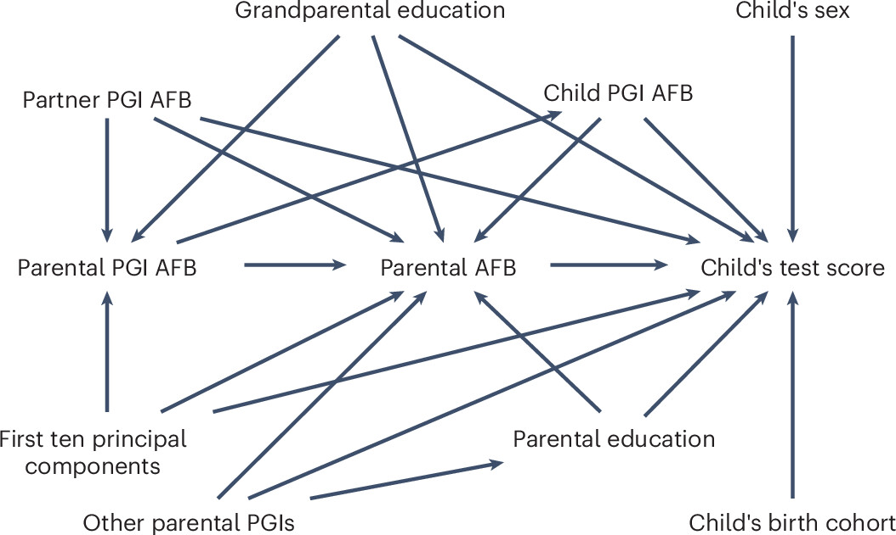

読書メモ：Grätz et al. (2025)
要約
イントロダクション
20世紀後半から女性の初産年齢は4、5年遅くなっている傾向がある。初産の延期は低体重出生や自閉症、統合失調症といった負の生物学的帰結をもたらす一方、高い数学の点数といった正の社会的帰結をもたらす。
重要な問いは、上述した関連が因果なのかどうかである。先行研究は家族固定効果モデルを用いて母親および父親の年齢の効果を検証し、類似の結果を示してきた。ただし、きょうだい間の未観測交絡や子の出生年の位置付けなど、不明瞭な点が多い1。
本研究ではメンデル無作為化デザインにもとづく遺伝操作変数法を用いて、親の出産年齢の子の教育への因果効果を推定する。具体的には、母親と父親の初産年齢の多遺伝子インデックスPGIと子どもが10歳のときのテストの成績を用いる。本研究はメンデル無作為化デザインの3つの課題を克服する。
第一に、同じ遺伝的変異体が複数のアウトカムを予測するpleiotropy（多面発現）である。pleiotropyは共通の生物学的影響、第三の社会的要素の媒介によって生じる。pleiotropyは操作変数法の中核的な仮定である除外制約を侵犯する。本研究では親の初産年齢を予測するような要因、具体的には性交渉、避妊行動、喫煙行動、ADHD、教育達成のPGIを統制することでこれに対処する。
第二に、もし親の初産年齢を予測する遺伝子が直接子どものテストの成績を予測するのであれば、操作変数の仮定が満たされず結果をバイアスする。本研究では、親の初産年齢のPGIと子の初産年齢のPGIを同時に統制することで、操作変数に共通する遺伝形genotypeの可能性に対処する。
第三に、PGIの測定にはわずかな人口学的属性しか統制しておらず、同類結合や人口層化population stratificationといった環境要因の交絡が存在しうる。本研究では、配偶者の初産年齢のPGIを統制し、またHardy–Weinberg均衡外にあるSNPsを取り除き、さらに祖父母の学歴と主成分因子を統制する。行政データを用いることでascertainment biasにも対処する。これらのデザインは Figure 1 に示されている。

出所）Grätz et al. (2025, Figure 1)
データと方法
MoBa (Norwegian Mother, Father and Child Cohort study)
子（三つ子）114500人、母親95200人、父親75200人
最終的には15670人を分析に用いる。
アウトカムは数学、読解力、英語力の成績。初産年齢は両親とも回答しているケースに限定。遺伝形はすごく頑張って作成2。
Results
OLSでは先行研究が示したような正の因果効果が確認されたが、上述のデザインにもとづくIVでは効果は0となり、デザインによっては負の効果さえ見受けられた。
共変量を段階的に投入し何によって正の因果効果が消え、負の因果効果が生じるのかを確認する。両親子どもの初産年齢のPGIを統制すると正の効果はなくなる（nurture effectとancestry effectによって正の因果効果が生じる）。親の学歴のPGIを統制すると負の効果が認められる。
議論
IVとメンデル無作為化デザインにもとづく因果効果の推定では、OLSで確認されたような正の効果は認められなかった。むしろ、親の学歴のPGIを統制すると負の効果が認められた。ただし親学歴のPGIは学歴に影響するすべて（身体の弱さ、認知スキル、非認知スキル）を捉えているので、過剰統制の可能性はある。
本研究の結果は、親の年齢の高さは高い社会的地位と豊富な資源、そして良好な関係と育て方parentingによって子どもの教育にプラスの影響を与えるという社会学的な予想を支持しない。同時に、親の年齢の高さが子どもの精神疾患やDNAのメチル化によって子どもの教育に影響を与えるという生物学的な予想も支持しない。
ノルウェーは一人当たり収入が高く、収入格差が比較的小さい国であり、また政府の子どもへの投資も大きい。このような国では親の年齢が子どもの教育に与える影響は小さいことが予想される。また、人口全体で初産年齢が遅れると、年齢の負の効果は緩和されることが予想される。また、ここでの負の効果は社会学的要因と生物学的要因の相殺によって生じる可能性がある。とはいえ、総じて初産年齢の遅れは必ずしも子どもの教育にプラスの影響を与えるわけではないことが示された。